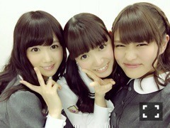
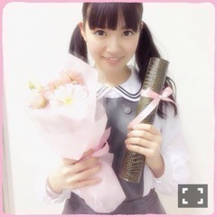
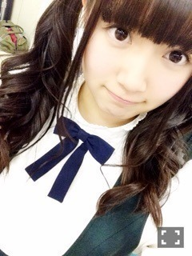
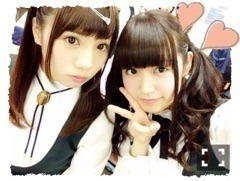
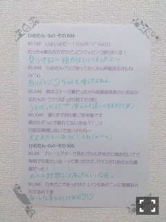
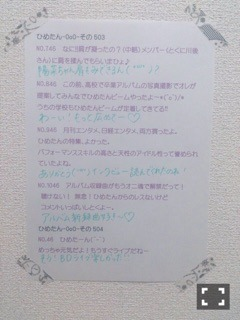
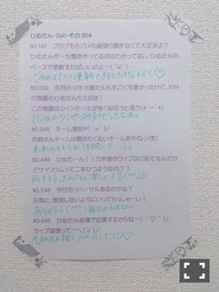

| 2015/03 09 Mon | ひめたん-OoO-その526 |
かりんちゃんかわいい(´,,•ω•,,｀)

かりんちゃんのくしゃ顔♡

今度はひめも
くしゃ顔で一緒に写メ撮りたい～
らりはひめのおねーたま♡♡
昨日はアルバム特典イベント
大撮影会でした！
来てくださったみなさん
ありがとうございました（＾ω＾）
はじめてのイベントだから
どんな感じなんかなー？て思ってたけど
楽しかったです～
①ピース
②ハート
③メンバーオリジナルポーズ
の3つから
選んでもらう感じだったんだけど
③でびーむしたら
「やっぱりね～」「だと思った～」
ってたくさん言われた(´・ω・｀)笑
だから時々変化球とか
投げてみたりしながらやったよ！
緊張して手が震えるよ！！
なんてひともいたけど
それ見てたらひめにも緊張伝わったよ～
あと、写真撮る時の掛け声が
「いきますよ～」ってひとが多くて
もしかしてひめの真似してたの？♡
笑っちゃったよ～
みなさん真剣に撮ってくれてて
ちょっとだけ恥ずかしかったあ
写真大事にしてね(´｡･v･｡｀)
そしてこの日
高校卒業記念企画
していただきました＊

花束やりぼんは
それぞれのイメージカラーになってて
いくちゃんは きいろ
ちーちゃんは あか×あお
みおちゃんは オレンジ×しろ
きいちゃんは ぴんく×きみどり
そしてひめは
ぴんく
でした
愛の詰まった卒業企画、幸せでした♡
乃木坂との学生の両立
辛いことも悩むこともありましたが
私たちはたくさんの方々に支えられて
3年間頑張ってくることができました
そして無事卒業式を迎えられそうです
ありがとうございました
本当に嬉しかったです( ´•̥ω•̥` )
もう少しで高校の卒業式！
周りの人たちに感謝しながら
3年間の思い出を振り返ったりして
大切な1日にしたいと思います。

「ソニレコ！暇つぶしTV」
桜井、星野、中元で
ゲストに呼んでいただきました！
パーソナリティーは
Kさん、高山、深川
毎週金曜日配信＊
質問にお答えしたり、新曲の話したり、
ゲームもしました！
毎週少しずつ楽しんでね☆
告知遅くなりましたが
発売中の「月刊MdN」に
乃木坂46載せていただいています！
全員のコメントや
11th制作時のオフショットなど
たくさん載っているので
ぜひチェックしてみてください( ˇωˇ )
3/14発売「EX大衆」は
乃木團の密着、そして
永島・中元でインタビューも
していただきました！
インタビューではBDライブのこと、
今までのことやこれからのこと、
3rdアンダーライブこと
たくさんお話させていただきました
熱いインタビューになってる
と思います（＾ω＾）
むぎゅっ

前回の日記の質問
答えてくれてありがとう( ˇωˇ )
全部読ませていただきました
質問返しに質問返し～
1.
いつものやーつ(笑)
毎度言わせちゃってごめんね
読みながらニヤニヤしてました♡♡
2.
お別れの季節、花粉症、お誕生日
が多かったかな？
ご卒業のみなさん、おめでとう！
お誕生日のみなさん、おめでとう！
お別れは送り出す方も出される方も
寂しいんだよね。
3.
素敵な四字熟語をたくさんありがとう。
初めて知る言葉もあったけれど、
解説付きで勉強になりました
「初志貫徹」「大器晩成」「日進月歩」
とか多かったかな。良いよね～
「一期一会」私のモットーです。
普段はひめが質問返しするから
たまにはこうやってみなさんに
答えてもらうのいいね(・∀・)
またやろうね♡
では質問返しのコーナーいきましょう

待ってこの愛未ちゃん超かわいい。

 ひめたんの乃木坂で好きな曲
ひめたんの乃木坂で好きな曲
ベスト3はなんですか？
「君は僕と会わない方が
よかったのかな」
「やさしさなら間に合ってる」
「僕がいる場所」
ひめたんって虫さわれるの？
苦手( >_< )
ダンゴムシさんは触れるよ( >_< )
ひめたんは涙脆い方？
最近涙脆いんだよねぇ
前はそうでもなかったのに
何だろう、歳かな。
ひめたんは流行に乗るタイプ？
乗り遅れるタイプ？
いや、流行に流されないだけだから！
ってタイプ？
流行とかよくわかんないし、
別に意地張って乗らないとかいう
わけでもないかな( ´_ゝ`)
卒業のシーズンだけど
好きな卒業ソングはある？
斉藤由貴「卒業」
GReeeeN「旅立ち」。
ひめたんの日記の
コメント欄下２ケタに46を踏んだ方へ
手書きでコメ返するコーナー
＼ ひめたん46 ／



いつもたくさんのコメント
ありがとうございます( ˇωˇ )
最近はさらにたくさんの
コメントが寄せられてて
遊びにくるたびびっくりする♡
全部読んでます♡
いつも本当にありがとう！
ありがたいことに、撮影を
最近たくさんしていただきました！
早く告知したいなあ(´｡･v･｡｀)♡
みなさん楽しみにしていてくださいね
もう少し待っててね～＊
3月も引き続き
ポジティブキャンペーン執行中。
明るい気持ちでいると
清々しいし、切り替えも上手になる
気がするんだ～
あすかりんはよパーティーしよ～
(＊´・ω・＊)
コメント(1102)
2015/03/09 23:42